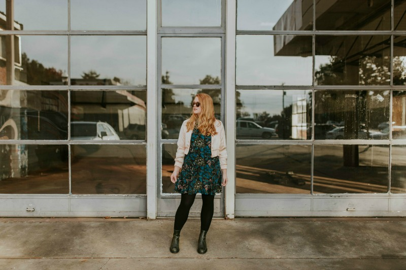
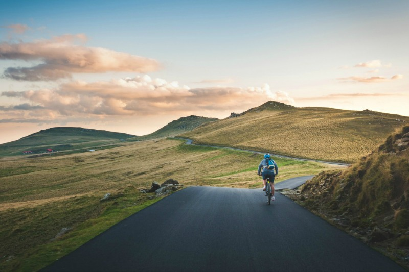
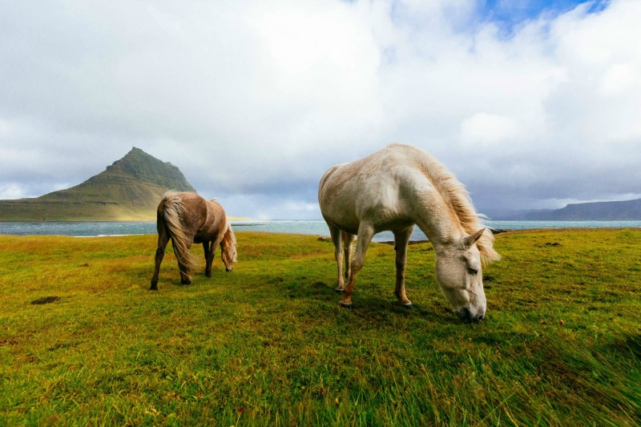
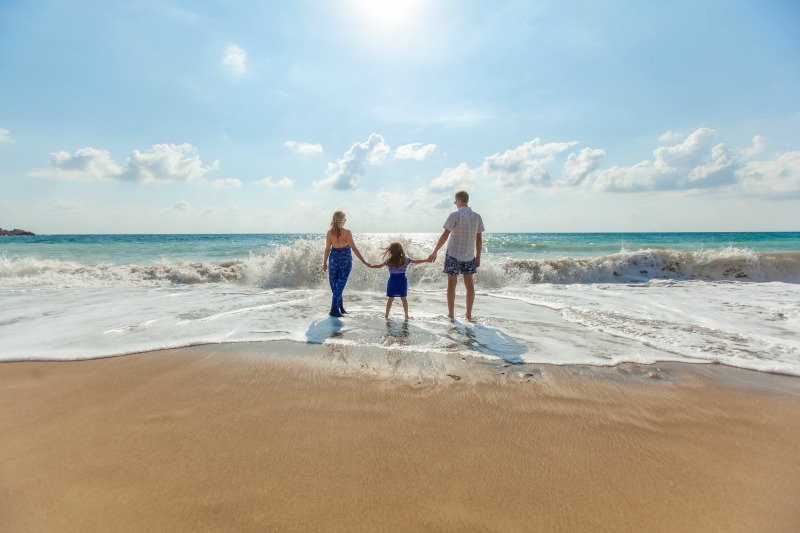
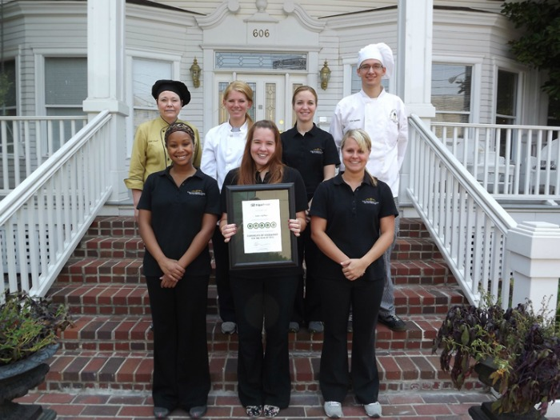
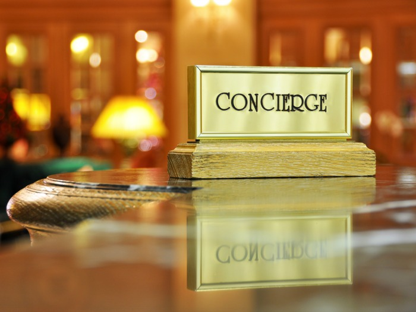

We hope you enjoy your visit to our site and book your stay with us today!
You can do it all from Moore's B&B...

Want to do some shopping in Galway City?

Maybe go for a cycle in Connemara?

How about just relaxing and going for a walk in good company?

You can do it all from Moore's B&B and even visit the beach on your way back!
What the team at Moores B&B offer

A World Class Service
Fully watered breakfast service from 6pm
24 hour housekeeping and concierge service
Evening dinner room service from 6pm to 10pm
Luxury Suites available
Free Wifi
Special need visitors are welcome
Waitered Breakfast Service
Qualified chefs serving a wide menu selection
Specific off-menu breakfast orders served with notice
Service from 6am to 12 midday
If you want to sleep late, you can!

24 Hour Housekeeping Service
24 hour manned service only a call away
Full housekeeping service day or night
You need us to book a trip or a restaurant for you, we will!
If we can help, we will!
Evening Dinnner Service
Qualified Chef by appointment will cook dinner from 6pm to 10pm
Let us know what you want and our Chef will deliver a meal to remember
Dinner can be in our luxurious dining area or direct to your room